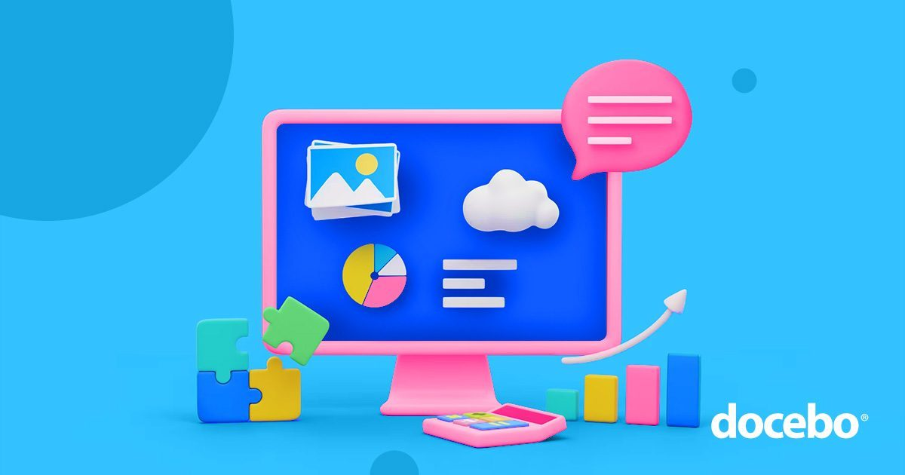
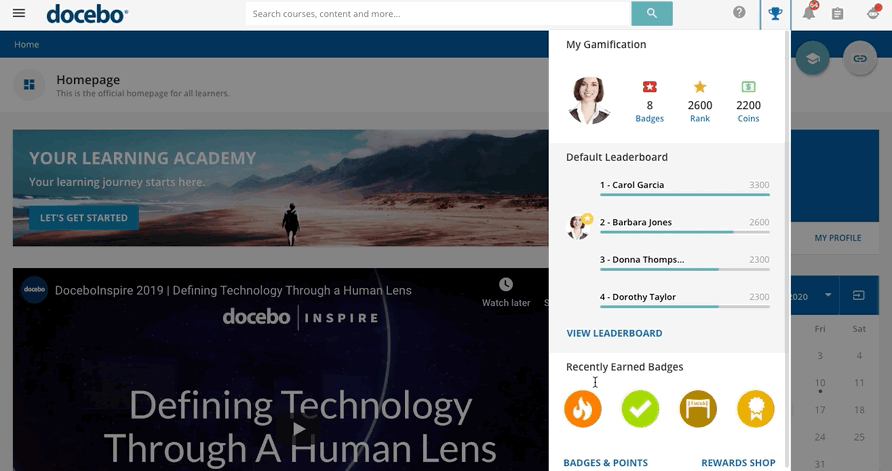
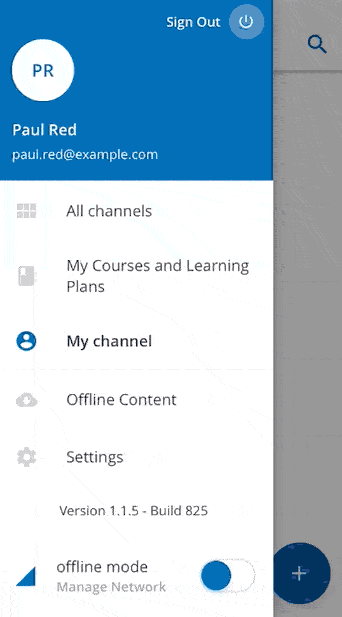
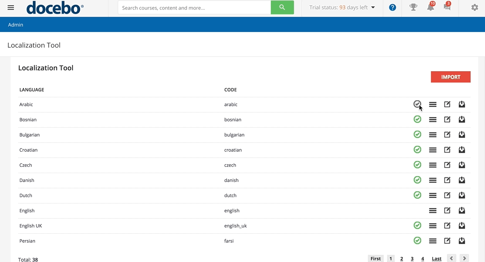
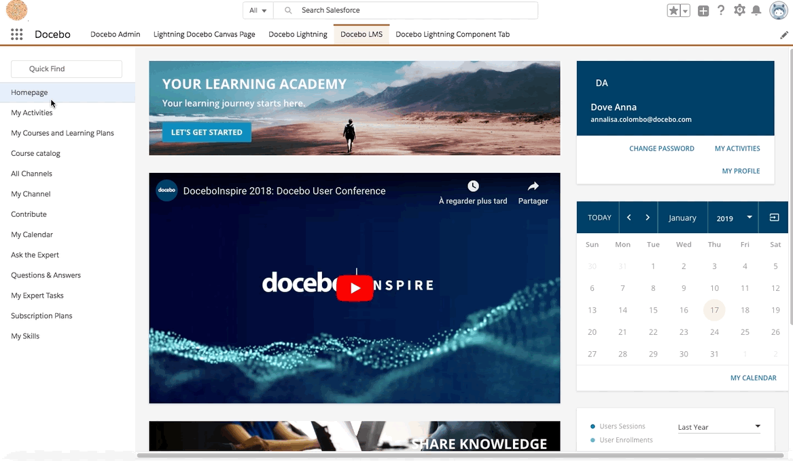
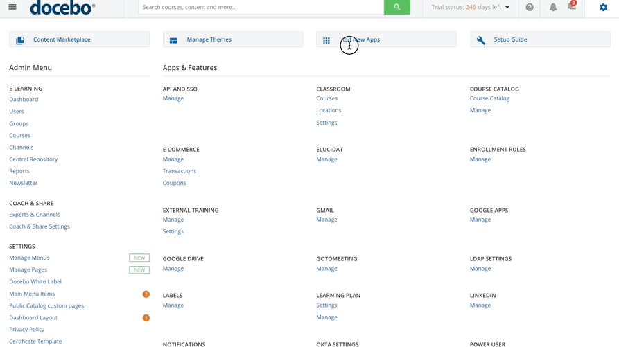
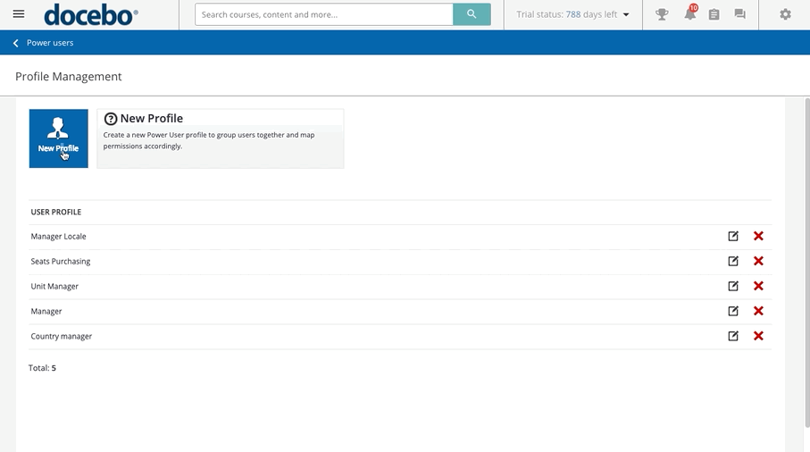
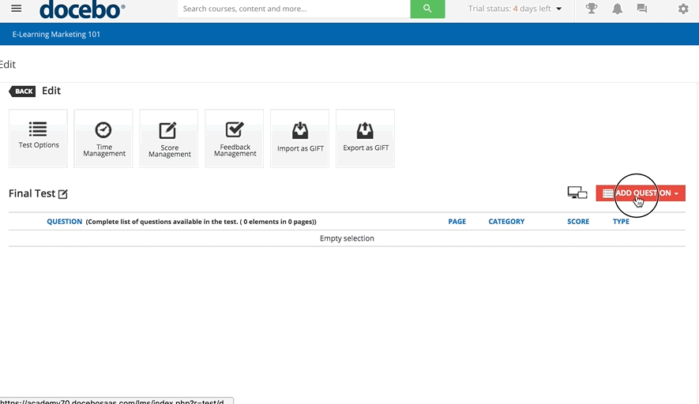
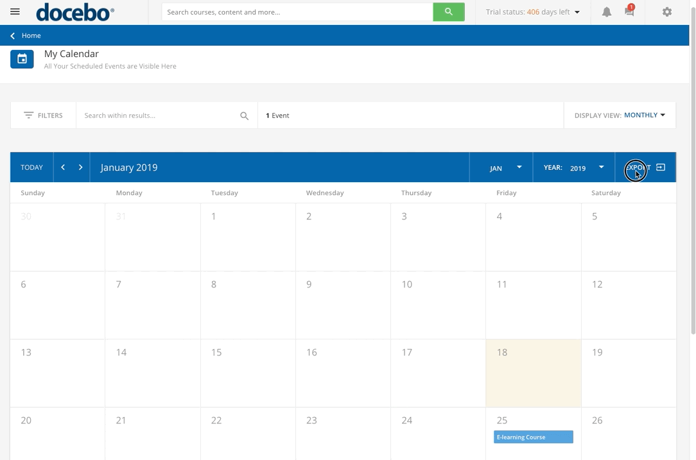

Топ-25 функций системы управления обучением (LMS) (оценены в 2026 году)


Ваша система управления обучением (LMS) является ключевым элементом всех ваших планов, инициатив и потребностей в обучении и развитии.
Она хранит, предоставляет и облегчает электронное обучение любого типа — от адаптации до обучения по вопросам соответствия (обучение сотрудников), обучения клиентов, поддержки партнеров и многого другого.
Тем не менее, из-за того, что эти платформы настолько мощные и содержат множество функций, может быть сложно выбрать наилучшую LMS для вашей команды и компании.
В этом руководстве мы рассмотрим 24 лучших функции LMS и их значение.
Таким образом, мы раскроем их секреты и поможем вам понять, какие функции важны для ваших конкретных потребностей и сценариев использования.
Что такое LMS (система управления обучением)?
LMS — это программное обеспечение, которое организации могут использовать для управления, документирования, предоставления и отслеживания программ обучения и развития.
Системы управления обучением тесно связаны с концепцией электронного обучения, которые появились в 1990-х годах для облегчения обучения с использованием компьютеров и Интернета.
LMS не просто предоставляют контент электронного обучения учащимся. Они также предлагают мощные метрики для выявления пробелов в знаниях и оптимизации учебных курсов.
25 ключевых функций системы управления обучением
Мы сгруппировали функции по сценариям использования, чтобы было еще проще понять, о чем они, с первого взгляда.
Если вы хотите более подробно узнать, что делает хорошую LMS, ознакомьтесь с нашим руководством по требованиям к LMS.
Функции для развития и удержания сотрудников
Развитие и удержание сотрудников являются одними из самых важных целей любой программы обучения и развития.
Инвестиции в развитие и удержание сотрудников приведут к более вовлеченному и мотивированному коллективу, который чувствует связь с миссией вашей компании.
Вот некоторые функции LMS, которые помогут вам достичь этих целей.
Мы стали более социально связанными, чем когда-либо. (Можем ли мы получить ретвит?? )
Поскольку онлайн-социальное взаимодействие стало второй натурой для большинства из нас (см. Business Insider для самых популярных приложений десятилетия), все больше организаций обращаются к модулям социального обучения.
Эта функция LMS создает образовательную среду, в которой специалисты в одной организации могут общаться, сотрудничать, обмениваться лучшими практиками и учиться у экспертов.
Функции социального обучения предоставляют возможность задавать вопросы и делиться пользовательским контентом (например, YouTube), чтобы повысить вовлеченность учащихся и обмен знаниями в вашей организации.
Связанное: Что такое теория социального обучения?
2. Геймификация
Геймификация – это функция LMS, вдохновленная миром видеоигр. Будьте готовы к очкам, значкам, рейтингам, конкурсам и наградам.
Применение сути видеоигр для достижения профессиональных целей делает процесс обучения увлекательным.
Наличие этих функций в LMS повышает вовлеченность учащихся, запоминание знаний и компетентность, а также способствует здоровой конкуренции.
Итоговый результат?
Позитивный и приятный пользовательский опыт.

Связанное: Почему вам нужна геймификация в электронном обучении
3. Возможность мобильного обучения
Мы смело заявляем, что в пределах досягаемости находится мобильное устройство. Когда вы не на работе, вы, вероятно, проводите большую часть времени, выполняя поиск в Google и на YouTube, используя его.
И не забудьте про просмотр TikTok.
Смартфоны стали воротами к работе и обучению. Поэтому платформы LMS, которые не являются мобильными, не привлекают столько людей, сколько могли бы в вашу онлайн-программу обучения.
Это означает, что вы упускаете возможность охватить своих учащихся на их любимых мобильных устройствах и позволить им учиться в дороге.
В наши дни люди ожидают, что смогут получать доступ к любому онлайн-контенту через мобильное приложение, и это относится и к учебным курсам.

Связанное: Что такое мобильное обучение? (m-learning)
4. Интеграция видеоконференций для виртуальных классов
В мире обучения и развития (L&D), мы быстро поняли, насколько важны видеоконференции, когда нам нужна удаленная подготовка.
Это особенно актуально для удаленных и глобальных команд, которые не могут путешествовать на конференцию, когда требуется дополнительное обучение.
Поэтому интеграция видеоконференций является ключевой функцией LMS.

Если ваш LMS может интегрироваться с инструментами видеоконференций, такими как Zoom, MS Teams, GoToWebinar, Teleskill или SkyMeeting, вы можете легко создать виртуальный класс, используя свое любимое приложение для видеозвонков.
5. Искусственный интеллект
Искусственный интеллект (AI) с возможностью поиска с использованием естественного языка, виртуальный коучинг на базе AI (встроенный в создание контента на базе AI), автоматическая маркировка, предложения контента и создание контента – это мощный помощник для LMS.
И это не только потому, что позволяет специалистам по обучению работать эффективнее, а не усерднее.
С помощью функций AI, ваши учащиеся становятся более самостоятельными, учебные пути становятся более персонализированными, а ваши администраторы получают больше времени для улучшения ваших программ. И с развитием агентного AI, возможности безграничны.
Функции обучения для членов
Потребности в обучении профессиональных ассоциаций немного отличаются от потребностей отдельных компаний.
Поэтому, если вы управляете профессиональной или другой ассоциацией и нуждаетесь в LMS, ищите такую, которая имеет следующие функции для обучения членов.
1. Брендинг и белым этикетом
Сохранение «бренд-идентичности» – это не просто модное слово.
Представьте, что вы заходите в магазин Apple – вы сразу понимаете, где находитесь. Хотите, чтобы ваши пользователи чувствовали то же самое, когда входят в LMS.
Существует ценность в поддержании последовательного эстетического стиля, тона и привлекательности, которые являются уникальными для вашей компании или ассоциации.
Белым этикет позволяет вашим учащимся не понимать, что ваша платформа принадлежит кому-то другому, что помогает им чувствовать себя комфортно.
Помните: именно небольшие детали отличают профессионалов от любителей. ?
Связанное: Настройка брендинга и внешнего вида вашей платформы
Вы не хотите, чтобы учебные опыты вашей компании выглядели непрофессионально, поэтому найдите поставщика LMS, который позволяет вам использовать белым этикет.
Это позволит вам настраивать учебный контент и сохранять последовательный брендинг на протяжении всей вашей онлайн-платформы, от социальных сетей до LMS.
2. Управление курсами
Это очень важная функция – спасибо нашим администраторам ?. Администраторы должны уметь:
- Создавать и управлять курсами
- Классифицировать их
- Зачислять пользователей
- Быстро и легко генерировать отчеты
LMS с надежными функциями управления курсами позволит администраторам управлять всем из централизованного места (также известного как центральный репозиторий), где они могут легко:
- Проведение создания курсов
- Назначение курсов пользователям
- Изменение макетов
- Загрузка и управление контентом курсов
- Массовая регистрация пользователей
- Настройка расширенных настроек курсов

Хорошее управление курсами также требует, чтобы LMS соответствовал стандартам SCORM и другим стандартам и API для электронного обучения.
Это означает, что вы можете добавить любой учебный объект в свою систему, независимо от того, откуда он был получен.
3. Глобализация
В наши дни компании и ассоциации работают по всему миру, а не только в своей стране.
Поэтому обучение и обучение должны быть доступны везде, для всех учащихся, независимо от их языка и культурного фона или стиля обучения.

Поэтому так важно иметь LMS, оснащенный широкими возможностями локализации, управлением доменами и глобальными платежными шлюзами для электронной коммерции.
4. Электронная коммерция
С возможностями электронной коммерции вы можете использовать встроенные магазины или интеграции с поставщиками, такими как Shopify или PayPal, чтобы упростить продажу (и покупку) курсов.
Интеграции электронной коммерции также позволяют создавать и продавать наборы курсов и управлять различными планами для разных групп клиентов.
Это позволяет вашим клиентам легко просматривать, просматривать и приобретать учебные материалы или каталоги курсов из вашей LMS – все через чистый и дружелюбный пользовательский интерфейс.

Связанные: Как продавать курсы онлайн, используя вашу LMS Docebo
5. Возможность смешанного обучения
Смешанное обучение – это функция LMS, которая помогает вам дополнять традиционные методы обучения контентом электронного обучения.
При смешанном обучении часть обучения проходит в традиционной аудитории (в помещении или онлайн) с инструктором.
Это также известно как обучение под руководством инструктора.
Однако, помимо обучения под руководством инструктора, учащиеся могут получать доступ к различным материалам и форматам, упражнениям, викторинам и другим ресурсам электронного обучения через LMS. Смешанное обучение дает вам лучшее из обоих миров – немедленность и руководство обучения под руководством инструктора с доступностью и удобством контента электронного обучения.
Связанные: Что такое смешанное обучение? (Преимущества смешанного обучения в вашей LMS)
Функция поддержки продаж
Помните, что мы говорили о том, что LMS – это мощные инструменты?
Это потому, что это платформы, которые выходят далеко за рамки простого предоставления учебного контента. Конечно, ваша LMS необходима для обучения и адаптации ваших сотрудников.
Но, при правильной интеграции, она также может сыграть большую роль в поддержке продаж, обучении партнеров и увеличении вашей прибыли.
Интеграция с Salesforce
Salesforce присутствует везде, и именно там продавцы проводят большую часть своего времени.
При интеграции с Salesforce, продавцы могут оставаться в Salesforce, чтобы получить обучение — нет необходимости переключаться между платформами.
Это означает, что вся необходимая информация для обучения продаж всегда будет у них под рукой.
Если представителю отдела продаж необходимо освежить свои знания о продукте, он может легко получить их, не тратя время на поиск информации в других источниках.
Все это также относится к другим заинтересованным сторонам. LMS с интеграцией Salesforce могут предоставлять информацию вашим партнерам.
Вы можете обучать своих партнеров и измерять эффективность ваших партнерских отношений, связывая сертификацию и обучение с показателями продаж.
В то же время, интеграция с Salesforce также может помочь вашим клиентам.
Вы можете предложить им возможности обучения, которые повысят успех клиентов и сделают их амбассадорами бренда и «промоутерами».

Связанное: Введение в Docebo для Salesforce
Функции обучения для предприятий
Консолидация, масштабируемость, отчетность…
Это не просто модные слова для использования на совещаниях совета директоров.
Это функции, которые вам необходимо включить в запрос предложения при выборе нового LMS, если вы крупное предприятие.
1. Объединение обучающей платформы
Шампунь и кондиционер в одном флаконе? Лучше избегать, если вам вашему волосу.
Обучающая платформа «все в одном»? Прекрасно и просто волшебно.
В сфере обучения и развития (L&D) очень неприятно, когда приходится платить за отдельные LMS для управления разными системами для разных целей.
Обучающая платформа «все в одном» означает, что вы можете объединить все свои цели в одно решение, экономя время, деньги и ненужные хлопоты.
Специалисты по обучению и развитию должны уметь управлять всем жизненным циклом обучения – от создания контента до доставки программ и измерения влияния обучения на ваш бизнес.
Это идеальное место для обучающей платформы, если вы не против шутки.
2. Расширенные отчеты LMS
Обучение и развитие – это значительная инвестиция, поэтому люди, отвечающие за это, хотят видеть конкретные метрики LMS, которые связывают обучение с производительностью организации.
Расширенная отчетность о ваших программах электронного обучения – это несложная задача; это то, что должна поддерживать любая современная LMS.
Настраиваемые панели управления помогают администраторам и менеджерам получать отчеты об обучении «в один клик».
Вы должны уметь отслеживать производительность учащихся и показатели завершения обучения с помощью простых отчетов, либо создавать собственные отчеты для групп учащихся, учебных планов, сертификатов и дат.
Если вы используете LMS с расширенными возможностями отчетности, вы сможете оценить рентабельность ваших программ электронного обучения и помочь своим учащимся, оптимизируя учебные программы на основе метрик LMS.

3. Управление организацией
Помимо управления курсами и контентом, ваша LMS должна позволять вам детально управлять доступом и группировкой пользователей.
Например, вы можете предложить обучение по продукту как вашей команде продаж, так и вашим клиентам.
Но вам, возможно, не нужно, чтобы обе группы получали абсолютно одинаковую информацию.
Именно здесь на помощь приходят функции управления организацией.
Настраиваемое управление организацией в LMS означает возможность настраивать различные домены, филиалы и группы пользователей. Таким образом, каждый остается в своей области, а администраторы имеют полный контроль над разрешениями.
4. Масштабируемость обучающей платформы
Проблемы масштабирования – это реальность, и они могут быть неприятными.
Учитывая время, деньги и профессиональные ресурсы, необходимые для выбора, запуска и поддержки хорошей LMS, вы хотите убедиться, что она будет масштабироваться в соответствии с вашими потребностями и поддерживать ваш рост.
Масштабируемость в вашей LMS означает, что при появлении новых сценариев использования и росте ваших потребностей у вас есть возможность включать новые расширения, функции и интеграции, которые помогут решить эти проблемы.

Общие функции
До настоящего времени мы рассмотрели некоторые конкретные функции LMS, которые важны для различных типов организаций.
В то же время, следующие функции являются общими, и каждая LMS должна их иметь. Поэтому, если вы планируете перейти на новую LMS, убедитесь, что она оснащена всеми этими функциями.
1. Персонализированные учебные траектории
Управление большим количеством учащихся в LMS может показаться сложной задачей, особенно если вы хотите предоставить каждому индивидуальный опыт.
Различные должности пересекаются, определенные наборы навыков используются совместно, и определенные курсы являются обязательными для всех сотрудников – определение того, кого нужно записать на какие курсы, может превратиться в кошмар.
Учебные траектории позволяют вам легко записывать учащихся, поскольку они направляют их после настройки.
Кроме того, некоторые современные LMS имеют функции ИИ, которые делают обучение более персонализированным, подобно тому, как работают алгоритмы рекомендаций Netflix и Spotify.
LMS начинает понимать предпочтения вашего учащегося и направляет его по учебной траектории, которая подходит именно ему.

Связанное: Как учебные траектории помогают создавать структурированные учебные программы
2. Интуитивно понятный пользовательский интерфейс
Проще говоря, если обучение онлайн не является простым в использовании, люди не будут им пользоваться – мы все знаем, какой это кошмар – пытаться разобраться в приложении с неудобным пользовательским интерфейсом.
Приложения для онлайн-банкинга, мы говорим о вас…?
Интуитивно понятный и удобный пользовательский интерфейс является основой хорошего пользовательского опыта.
Ваши учащиеся должны находиться на вашей LMS, чтобы учиться и совершенствовать свои навыки. Чтобы не чувствовать себя потерянными и раздраженными из-за того, что интерфейс платформы электронного обучения не обновлялся с середины 90-х.
Связанное: Время для повышения уровня: ваш гид к наилучшему опыту обучения
3. Управление ролями
Давайте будем честными – даже в LMS, которая предлагает много свободы и автономии, нам все равно нужно некоторое управление тем, что наши учащиеся могут и не могут делать.
Возможность просматривать, редактировать, создавать и удалять права для разных пользователей – это самая базовая функция любой LMS. Роли пользователей позволяют администраторам контролировать доступ к потенциально чувствительной информации.
Вам не нужно, чтобы Стив из IT публиковал видео со своими кошками в обсуждающем форуме.
И вам не хочется, чтобы Марк из отдела кадров случайно удалил весь модуль, пытаясь изменить брендинг курса.

Обучение – это не только развлечение (даже с лучшей геймификацией в мире). В конце концов, мы не знаем, кто сдал, а кто нет.
Инструменты оценки крайне важны для отслеживания прогресса и обеспечения того, чтобы учащиеся успешно завершили обучение.
Множественный выбор, короткие ответы, эссе и тесты «истина/ложь» – существует множество различных способов оценки обучения. И любая достойная LMS должна их поддерживать.

Связанное: Узнайте, как создать и управлять тестом в вашей LMS Docebo для курсов электронного обучения
5. Сертификаты
В некоторых случаях, помимо прохождения теста, важно иметь документ, подтверждающий это. Особенно, если эти навыки и знания относятся к требованиям вашей отрасли.
В этом случае вам пригодятся программы сертификации, которые вы сможете быстро и легко создать.
С помощью LMS, поддерживающих сертификацию, вы сможете отслеживать, какие сотрудники прошли необходимые курсы, какие еще нет, и кому необходимо обновить сертификат.

Связанное: Сертификат, который вас удивит: как управлять сертификатами электронного обучения
6. Миграция данных
Ваша LMS содержит огромное количество важных данных. Курсы обучения, базы знаний и, конечно, сами знания, которые вы использовали для создания контента.
Предположим, вы решили перейти на новую LMS. Готовы ли вы начинать все с нуля?
Конечно, нет, это было бы слишком дорого и затратно. Поэтому вам необходимо выбрать LMS с функцией миграции данных.
Миграция данных позволяет легко импортировать контент для электронного обучения в LMS и также экспортировать контент из нее.
Таким образом, ваш контент остается у вас и не привязан к платформе LMS.
7. Адаптивный дизайн
Обучение на мобильных устройствах или m-learning сейчас очень популярно – и не зря. Оно позволяет учащимся получать доступ к учебным материалам в любое время и в любом месте, где есть подключение к интернету.
Но одна вещь, которую часто упускают из виду, – это адаптивный дизайн. Что же связывает адаптивный дизайн и m-learning, вы можете спросить?
Адаптивный дизайн – это название функции в программном обеспечении дизайна (включая LMS и инструменты для создания контента), которая может автоматически адаптировать дизайн онлайн-курсов или онлайн-контента под устройство, на котором он отображается.
То есть, если вы хотите сделать свой контент для электронного обучения доступным на настольных компьютерах и мобильных устройствах, вам не нужно создавать два отдельных курса.
Адаптивный дизайн позаботится об этом. Ваш курс будет отлично выглядеть и ощущаться на любом устройстве.
8. Уведомления
Иногда нам всем нужен дружелюбный напоминание, чтобы мы взяли себя в руки и начали действовать. Функции уведомлений делают именно это, поэтому вы можете убедиться, что ваши учащиеся завершат свои курсы, когда добавляются новые (или когда пришло время пройти обязательное обучение по соответствию требованиям).
LMS должна позволять вам создавать и отправлять динамические уведомления, специфичные для событий, целевым пользователям через различные каналы.
Будь то электронная почта, сама LMS или интеграция с приложениями для общения, такими как Slack – главное, чтобы LMS могла уведомлять учащихся о важных событиях.

9. Настраиваемость календаря
Как бы мы жили без наших календарей? Скорее всего, все еще в офисе, пока идет важная встреча.
Отслеживание учебных сессий (онлайн или оффлайн) может быть сложной задачей для занятых сотрудников. Поэтому очень полезно, если ваше программное обеспечение LMS может интегрироваться с различными приложениями календаря.
И, конечно, оно должно иметь встроенный календарь.
Таким образом, вы можете получить хорошее представление о длительности и этапах каждого этапа вашего учебного курса.

10. Безопасность
Когда речь идет об обучении, доверие имеет значение. Поэтому ваша LMS должна быть оснащена надежными функциями безопасности – не только для соответствия требованиям, таким как GDPR, но и для защиты данных ваших учащихся на каждом этапе. Функции, такие как единый вход (SSO), позволяют пользователям входить в систему, используя свои существующие корпоративные учетные данные, что снижает усталость от паролей, повышает принятие и обеспечивает безопасный доступ через единую точку входа.
3 различных типа LMS, которые следует рассмотреть
Мы говорили, что LMS могут быть сложными, поэтому не удивляйтесь этой части. Да, существует несколько типов LMS, и выбор подходящего для вашего плана внедрения LMS зависит от нескольких факторов.
Давайте посмотрим, какие это факторы.
1. Установленный vs. SaaS LMS
В наши дни мы привыкли к тому, что все «в облаке». В случае с LMS это практически то же самое. В результате, наиболее популярные системы управления обучением сегодня относятся к категории «SaaS LMS» (облачные системы управления обучением).
SaaS означает «программное обеспечение как услуга». Это означает, что вы платите ежемесячную или годовую подписку и получаете доступ к сервису онлайн. Противоположностью этому является самохозяинская LMS, которую вы размещаете на своих серверах.
Самохозяинские LMS могут быть хорошим вариантом для компаний, которым необходимо контролировать каждый аспект своей программы обучения (и у которых есть большой опыт в области технологий).
Для всех остальных лучше выбрать SaaS LMS. По сравнению с самохозяинством, он предлагает более быстрое развертывание, большую гибкость и, самое главное, – общая стоимость владения ниже.
2. Enterprise vs. SMB LMS
На первый взгляд, довольно сложно отличить LMS для малого и среднего бизнеса (SMB) от решения для крупных предприятий.
На их веб-сайтах и в маркетинговых материалах они обычно подчеркивают одни и те же функции и возможности.
Однако, основное различие заключается в том, как они справляются с масштабированием. LMS, предназначенная для малого и среднего бизнеса, позволит вам создавать и проводить учебные курсы, и основной акцент будет сделан на простоте установки и использования.
Системы управления обучением, которые больше ориентированы на предприятия (компании с более чем 500 сотрудниками, примерно), имеют множество функций, связанных с масштабируемостью.
При большом количестве пользователей (не забывайте о обучении партнеров и клиентов, что увеличивает количество пользователей), эти LMS позволяют автоматизировать множество процессов, сегментировать пользователей и интегрироваться с другими корпоративными приложениями, что делает корпоративное обучение очень простым.
3. Бесплатные против коммерческих LMS
Лучшие вещи в жизни бесплатны… или нет?
Когда речь идет о LMS, вам может захотеться пересмотреть эту знаменитую максиму. Конечно, существуют бесплатные решения LMS, и если вы небольшой стартап, который самостоятельно продвигается к успеху, вам следует рассмотреть этот вариант.
Если у вас более серьезные потребности и сложные сценарии использования, вам следует придерживаться платных решений. Просто потому, что они предоставляют техническую поддержку.
Теперь ваша очередь
Курсы обучения, вебинары, адаптация… Существует множество сценариев использования LMS в большинстве организаций.
Выбор полностью функциональной LMS означает, что вы можете проводить и оптимизировать все свои мероприятия в области обучения и развития из одного центрального места. И лучшие LMS масштабируются и соответствуют вашему росту.
Узнайте, как Docebo может быть использован в вашей организации и для поддержки ее обучения и развития – запланируйте демонстрацию сегодня!
Часто задаваемые вопросы о сравнении функций LMS
Сколько LMS платформ мне следует сравнить, прежде чем принять решение?+
Большинство организаций получают выгоду от глубокого сравнения 3-5 платформ LMS. Этот диапазон обеспечивает достаточное понимание рынка, не вызывая перегрузки информацией.
Какую самую большую ошибку совершают организации при сравнении функций LMS?+
Наиболее распространенная ошибка – сосредоточение внимания на списках функций, при этом игнорирование реального пользовательского опыта для учащихся и администраторов. Платформа со всеми возможными функциями не будет эффективной, если она сложна в использовании.
Стоит ли мне отдавать приоритет стоимости или функциям при сравнении вариантов LMS?+
Приоритет следует отдавать ценности, а не стоимости. Лучший выбор эффективно удовлетворяет основным требованиям и обеспечивает четкую отдачу от инвестиций, поскольку более дешевые варианты, которые не соответствуют вашим потребностям, в конечном итоге обходятся дороже из-за низкой степени внедрения и плохих результатов.
Сколько времени обычно занимает процесс сравнения функций LMS?+
Тщательный процесс обычно занимает несколько недель или несколько месяцев, в зависимости от размера и сложности организации. Спешка в принятии этого решения является одной из основных причин сожаления о покупке.
Нужно ли мне привлекать IT к процессу сравнения функций LMS?+
Да, привлекайте IT на ранних этапах для проверки поставщиков с точки зрения безопасности, конфиденциальности данных, возможностей интеграции и технической поддержки. Это гарантирует, что платформа будет работать бесперебойно и безопасно в вашей существующей технологической экосистеме.